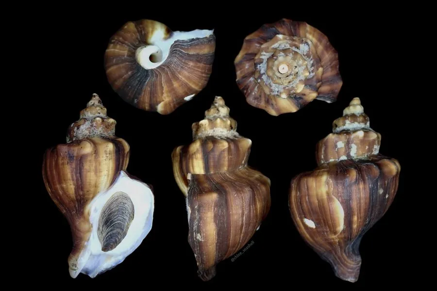

软体动物 · 动物界
香螺 Neptunea cumingii

中国黄渤海常见的大型蛾螺，壳顶高耸、壳面有细密螺肋，肉味鲜美，是北方沿海深受欢迎的食用螺。
- 分类
- 门软体动物门纲腹足纲目新腹足目科蛾螺科属香螺属
- 栖息环境
- 潮间带下区至水深数十米的沙泥、碎贝壳底质
- 地理分布
- 西北太平洋，包括中国黄海、渤海，朝鲜半岛和日本沿海
- 保护级别
- 尚无专门保护级别；资源主要受采捕强度影响
物种志
香螺的贝壳呈纺锤形或梨形，壳高约十五厘米，大的可达二十厘米，螺层约七至八层，壳顶高而尖，壳面呈黄褐色至灰褐色，密布细密的螺旋肋，并常有褐色的斑带，壳口宽大，外唇薄，口盖角质。足部肥大，肌肉发达，能牢牢抓住岩石和贝壳。它靠嗅觉寻找食物，捕食双壳类、死鱼和其他腐肉，也会钻进蛤蜊壳间取食。
它分布于西北太平洋的中国黄海、渤海及朝鲜半岛和日本沿海，栖息在潮间带下区至水深数十米的沙泥、碎贝壳底质，是北方近海常见的大型螺类。繁殖期在春季至初夏，雌体把卵鞘粘成许多长条状的卵群，层层叠叠如塔，俗称海螺塔，卵群附着在岩礁和渔网浮子上。它肉味鲜美、肉质紧实，是中国北方重要的经济螺类，以鲜食为主。目前尚无专门的保护级别，资源主要受采捕强度影响。
形态与习性
- 食性捕食双壳类，也吃死鱼和其他腐肉
- 壳高约十五厘米，大者可达二十厘米
- 壳形纺锤形，螺层七至八层，壳顶高而尖
- 繁殖春夏产卵，卵鞘粘成塔状卵群，俗称海螺塔
- 栖息深度潮间带下区至水深数十米
- 经济价值中国北方重要经济螺类，以鲜食为主
趣味知识
- 香螺的卵鞘会一层层粘成塔状，渔民称之为海螺塔，一簇可达几十厘米高。
- 它嗅觉灵敏，能顺着气味从远处找到死鱼和蛤蜊堆。
- 香螺足部肌肉紧实，是北方沿海最常见的食用螺之一，常用于白灼和酱爆。